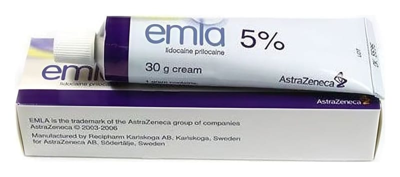

Emla %5 Krem, 5 Adet

Ne için kullanılır
KT · Bölüm 1EMLA®, lidokain ve prilokain adlı iki aktif madde içerir. Bu maddeler, lokal anestezikler adı verilen bir ilaç grubuna aittir. EMLA®, cilt yüzeyini kısa süreliğine uyuşturarak etki eder. Bazı tıbbi işlemlerden önce cilde sürülür. Bu, ciltteki ağrıyı durdurmaya yardımcı olur; ancak yine de basınç ve dokunma hissi hissedebilirsiniz. EMLA®deri üzerine, genital (üreme organı) mukozaya ve bacak ülserlerine uygulanır. EMLA®5 adet 5 g’lık tüplerde bulunmaktadır.
• EMLA®, yetişkin, adölesan (ergen) ve çocuklarda iğne uygulaması ve küçük deri cerrahisinde, girişimden önce deri üzerinde ağrının azaltılmasında kullanılır. • EMLA®ayrıca, yetişkin ve adölesanlarda (ergenler) cerrahi girişimlerden veya diğer lokal Bu ilacı kullanmaya başlamadan önce bu KULLANMA TALİMATINI dikkatlice okuyunuz, çünkü sizin için önemli bilgiler içermektedir.
• Bu kullanma talimatını saklayınız. Daha sonra tekrar okumaya ihtiyaç duyabilirsiniz. • Eğer ilave sorularınız olursa, lütfen doktorunuza veya eczacınıza danışımız. • Bu ilaç kişisel olarak sizin için reçete edilmiştir, başkalarına vermeyiniz. • Bu ilacın kullanımı sırasında, doktor veya hastaneye gittiğinizde doktorunuza bu ilacı kullandığınızı söyleyiniz. • Bu talimatta yazılanlara aynen uyunuz. İlaç hakkında size önerilen dozun dışında yüksek veya düşük doz kullanmayınız.
2(9)
anesteziklerin enjeksiyonla uygulanmasından önce genital mukoza üzerine uygulanabilir. • EMLA®ayrıca yetişkinlerde temizlemeyi kolaylaştırmak için bacak ülserlerinde ağrının giderilmesinde kullanılır.